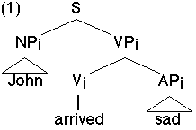

Williams 1994 accounts for controlled adjunct modifiers in terms of direct predication. E.g., John arrived sad is represented in (1) ("i" is the index of the predicate's external theta role).

The external theta role i of AP is vertically bound by i of the VP dominating it; i is then assigned to the subject NP by main clause predication. The relation between John and sad involves "direct predication" since there is no embedded clause in which AP's external theta role is assigned to a PRO subject.
My hypothesis is that the distinction between subject vs. object control of infinitive complements can be reduced to the distinction between direct predication (= subject control) vs. main clause predication [PRO VP] (= object control, with the matrix verb's object being PRO's antecedent). I argue that the nominative vs. dative case agreement of floating quantifiers in Russian infinitive complements supports this hypothesis.
In cases of subject control, the matrix verb subcategorizes for a bare infinitive VP whose external theta role is vertically bound by the external theta role of the matrix VP. This correctly predicts that floating quantifiers in subject controlled infinitive complements are nominative: they agree in case with the nominative subject of the main clause.
In cases of object control, floating quantifiers must be in the dative case, which has the following explanation: Russian has infinitive clauses with overt dative subjects. The dative case on floating quantifiers in object controlled infinitive complements is thus the result of agreement with the null dative subject of the infinitive complement clause.